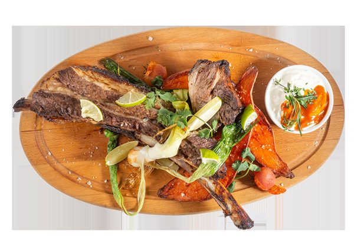

Für 2 und mehr
Das altsteirische Wirtshaus hat viel Platz für kleine und große Gesellschaften, Feste und Feierlichkeiten — in Räumen aus dem 17. Jahrhundert, in charmant unterschiedlichen Größen.
Herzhafte Platten und Buffets
In der altsteirischen Weinstube finden Sie auch Klassiker wie Platten für zwei oder mehr Personen und Buffets für die gemütliche Speisefolge ganz nach persönlichem Belieben. Dazu reichen wir gerne unsere steirischen Weine und das Schnapserl für „danach“.
Für Meetings, Feste und Feiern
Unser Küchenchef zaubert für Sie die schönsten Buffets, Menüs für Gruppen, Fest- und Feiertage. Um Ihren individuellen Wünschen gerecht werden zu können, bitten wir um Ihre persönliche Anfrage: +43 316 824 300 oder office@dieherzl.at.

Ihr Lieblingsessen
Auf der Suche nach Eurem Lieblingsgericht? Auf Vorbestellung erfüllen wir (fast) jeden kulinarischen Wunsch — passend zu jeder Familienfeier und zu jedem Geschäftsessen.
Aus dem Rohr
- G’füllte aufg’setzte Henn’
- Stelzen
- Steakvarianten
Buffets
- Gulaschbuffet
- Steirisches Buffet
- Backhenderlbuffet
Zu den Festtagen
- Festtagsmenüs
- Festtagsbuffets
- Menüs für Gruppen
Bitte geben Sie uns Ihre Terminwünsche rechtzeitig bekannt, damit wir für Sie da sein können. Bei Bedarf halten wir die Küche für Ihre Gesellschaft auch länger offen.

Stuben, Weinstube und Altstadtterrasse
Steht ein geselliges Beisammensein vor der Türe und damit die Frage, wo man in gemütlicher Atmosphäre zwanglos feiern könnte? Für Ihre Treffen reservieren wir gerne einen gemütlichen Tisch, und unser Küchenchef zaubert individuelle Menüs für kleine und große Runden.
Wählen Sie Ihren Lieblingsplatz in unseren gemütlichen Stuben — oder im Sommer den Gastgarten mit einmaligem Altstadtterrassengefühl, erreichbar auch über die Herrengasse und die Altstadt-Passage.
Wir beraten Sie gerne und gestalten mit Ihnen die geselligen Stunden nach Ihren Vorstellungen.
Anfrage für Feier, Platte oder Buffet
Damit Ihre Anfrage nicht am Telefon hängen bleibt: Sagen Sie uns Anlass, Termin und Wunsch — wir melden uns mit einem Vorschlag.